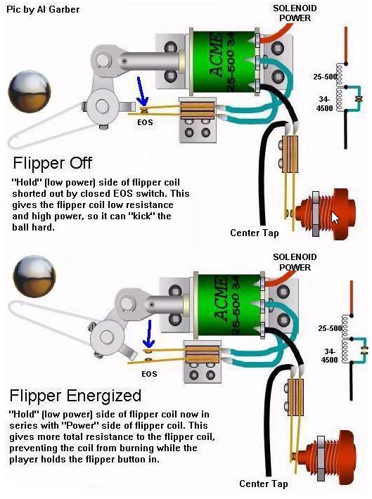
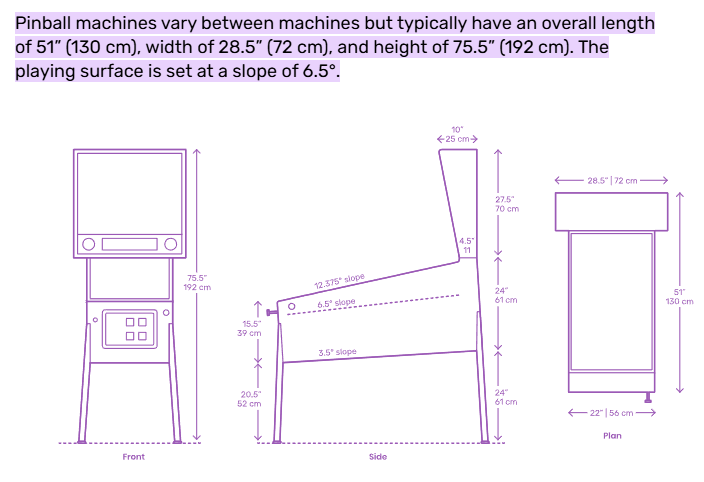

Topic 4 <<
Previous Next >> HW 3
Pinball
flipper_nx2312.7z (請各組利用 Solvespace 與 NX2312 繪製零組件並轉入 CoppeliaSim 進行動態模擬)
pinball_plunger.ttt

(source)

(source)
big_old_pinball.ttt
big_old_pinball_rot.ttt
Pinball 遊戲台上各種裝置的正式英文名稱:
Playfield (遊戲場)
整個遊戲台的主要活動區域.
Spinner (旋轉器)
可以旋轉的特殊目標, 球經過時會旋轉並加分.
Ball drain (球洞)
球掉落遊戲台底部的區域, 通常意味著失去一顆球.
Score display (得分顯示)
顯示當前分數的電子螢幕.
Multiball (多球模式)
同時在遊戲台上有多顆球的遊戲狀態.
Kickback (反彈)
可以將即將掉落的球彈回遊戲台的機制.
Flippers (控制撥桿)
位於遊戲台底部的兩個可以控制的撥桿, 用於擊球和控制球的方向.
Bumpers (跳珠器)
分佈在遊戲台上的圓形突起裝置, 當球碰到時會彈開球並加分.
Slingshots (彈射器)
位於flipper兩側的斜面彈射裝置, 當球觸碰時會快速彈開球.
Targets (目標)
遊戲台上的固定打擊目標, 可分為: Drop targets (下降目標), Pop-up targets (彈出目標), Standing targets (靜態目標) 等.
Lanes (軌道)
遊戲台上的特定路徑, 如：Roll-over lanes, Return lanes 等.
Ramps (斜坡)
遊戲台上的傾斜軌道, 球可以滾過並加分.
Outlanes (外側軌道)
位於flipper兩側的軌道, 通常會導致球掉落.
Plunger (Shooter) (發射器) - pinball_plunger.ttt
用於初始發射球的裝置.
Eject 機構
Popbumper 機構
References:
https://en.wikipedia.org/wiki/Pinball
https://cdn.aaai.org/ocs/1191/1191-5911-1-PB.pdf
https://www.researchgate.net/publication/360722315_Toward_a_Study_of_Pinball
https://www.clevelandsoftwaredesign.com/pinball-parts
https://www.kineticist.com/post/a-beginners-guide-to-pinball-designers
https://technologystudent.com/pdf22/pinball-full1B.pdf
https://www.sciencedirect.com/science/article/pii/S1474667017307358
Flipper (Source):
Model Color: Back Color1: Back Color2:
Render Mode:Definition:
Topic 4 <<
Previous Next >> HW 3